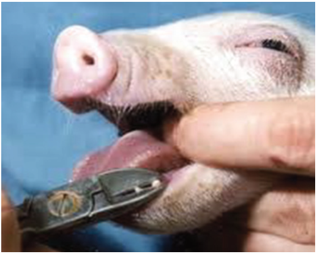

Agriculture for Secondary Schools
(e) Teeth clipping: Teeth clipping is performed on a new-born piglet shortly
after birth. The procedure involves trimming or clipping the sharp needle-
like teeth, also known as needle teeth (Figure 7.8). Needle teeth may cause
injuries to the sow’s teats, other piglets, or even the caretaker.
Figure 7.8 Clipping needle teeth using tooth clipper.
(f) Castration: Male piglets are often castrated to prevent aggressive behaviour
and the development of boar taint, an unpleasant odour, and flavour in the
meat of mature male pigs. Castration can also mean controlling unwanted
breeding. Surgical castration involves the removal of the testicles or crushing
the spermatic cord typically performed within the first week after birth when
piglets are less sensitive.
(g) Creep feeding: Creep feeding is the practice of providing supplemental feed
to nursing piglets during the transition period from milk to solid feeding. It
ensures adequate nutrition and promotes growth and development. Creep
feeding typically begins when piglets are around 1 to 2 weeks old and
continues until weaning. The feed is usually high in energy, protein, essential
minerals, and vitamins to meet the piglets’ growth needs.
(h) Weaning: Weaning is the management practice of separating piglets from
their mother (sow) by gradually stopping piglets from suckling the sow’s
milk and starting feeding solids feeds. To avoid stress to piglets, the usual
practice is to remove the sow from the pen and leave piglets in the farrowing
118
Student’s Book Form Two